<!doctype html>
<html lang="en">

	<head>
		<meta charset="utf-8">

		<title>reveal.js - ClassHT 1</title>

		<link rel="stylesheet" href="plugin/reveal.css">
		<link rel="stylesheet" href="plugin/beige.css" id="theme">
        <link rel="stylesheet" href="plugin/monokai.css">
        <link rel="stylesheet" href="plugin/title-footer.css">
       
	</head>

	<body>

		<div class="reveal">

			<div class="slides">


                <!-- Slides are separated by three dashes (quick 'n dirty regular expression) -->
                <section data-markdown data-separator="\n---\n" data-separator-vertical="^\n--\n$">
                    <script type="text/template">
                        <!-- .slide: style="text-align: left;" -->
                        # History of Economic Analysis
                        
                        ### Francesco Franco - Nova SBE

                        ---
                        

                        <!-- .slide: style="text-align: left;" -->
                        ## The Classics

                        Central economic questions to the classical economists were:

                        1. how does a nation grow? and here, the view is opposed to the Mercantilists and introduces new notions of productivity.

                        2. How is the distribution of resources determined across the different classes?

                        3. How long-run prices, called natural prices were determined?

                        4. What is the role of competition?

                        5. What is the role of the State?

                        6. How should the state design its tax system to collect resources to fulfill its role?

                        7. What is the role of banking and finance? and therefore the acceptance of an interest rate.

                        ---

                        <!-- .slide: style="text-align: left;" -->

                        ### Adam Smith 1723-1790
                                              
                        Wealth of Nations is usually identified as the first "text book" in Poltical Economy, composed of 5 books on the working of a Society of Perfect Liberty.
                        
                        The book presents a synthesis that organized economic thought for the following 40 years. 
                        
                        It is popularly identified with the "invisible hand" but its contents are better described as a overarching effort to
                        conceptualize the forces and the social organization that result in the phenomena of economic growth.
                        We will focus on Book 1 here represented in the flow chart.  
                        <center></center>

                    

                        ---

                        <!-- .slide: style="text-align: left;" -->
                        
                        #### Division of Labor -> Productivity

                        Wealth of Nations - Of the Division of Labour chapter I, A. Smith
                        > To take an example, therefore, from a very trifling manufacture; but one in which the **division
                        of labour** has been very often taken notice of, **the trade of the pin-maker**; a workman not educated
                        to this business[...] could scarce, perhaps, with his utmost industry, make one pin in a day,
                        and certainly could not make twenty. [...]But in the way in which this business is now carried on,
                        not only the whole work is a peculiar trade, but it is divided into a number of branches, 
                        of which the greater part are likewise peculiar trades. One man draws out the wire, another straights it,
                        a third cuts it, a fourth points it, a fifth grinds it at the top for receiving the head;
                        to make the head requires two or three distinct operations; to put it on is a peculiar business,
                        to whiten the pins is another; it is even a trade by itself to put them into the paper;
                        and the important business of making a pin is, in this manner,
                        divided into about eighteen distinct operations[...]Those ten persons,
                        therefore, could make among them upwards of forty-eight thousand pins in a day.
                        
                        > This great increase of the quantity of work which, in consequence of the division of labour,
                        the same number of people are capable of performing, is owing to three different circumstances;
                        first, to the **increase of dexterity** in every particular workman; secondly, to the **saving of the time**
                        which is commonly lost in passing from one species of work to another; and lastly,
                        to the **invention of a great number of machines which facilitate and abridge labour**,
                        and enable one man to do the work of many.

                        The division of labor and the consequent increase in productivity is through:
                        - increase in skill
                        - process of production is accelerated
                        - specific instruments are invented
                        ---

                        

                        <!-- .slide: style="text-align: left;" -->

                        #### man's nature -> trade -> Division of Labor

                        Growth and the increase in the standard of living occurrence through productivity growth. But why would we specialize to produce more? 
                        
                        Wealth of Nations - Of the Principle which gives occasion to the
                        Division of Labour - chapter II
                        
                        > **This division of labour**, from which so many advantages are
                        derived, is not originally the effect of any human wisdom,
                        which foresees and intends that general opulence to which
                        it gives occasion. It **is the necessary**, though very slow and gradual
                        **consequence of a certain propensity in human nature** which has in
                        view no such extensive utility; **the propensity to truck, barter, and
                        exchange one thing for another**.


                        > It is not from the benevolence of the butcher, the brewer, or the baker that we expect our dinner,
                        but from their regard to their **own interest**. We address ourselves, not to their humanity but to their self-love,
                        and never talk to them of our own necessities but of their advantages.

                        The nature of man pushes him to trade. This view reflects Smith's beliefs on man as an individual whose morality springs from the hedonic calculus.

                    

                        ---

                        <!-- .slide: style="text-align: left;" -->

                        #### Extent of the Market -> Division of Labor
                        
                        Wealth of Nations - That the Division of Labour is limited by the Extent of the Market - chapter III
                        
                        > As it is the power of exchanging that gives occasion to the division of labour,
                        so the extent of this division must always be limited by the extent of that power,
                        or, in other words, by the **extent of the market**...in the lone houses and very small villages
                        which are scattered about in so desert a country as the Highlands of Scotland, every farmer must be butcher,
                        baker and brewer for his own family.

                        Scale is important, in fact in the Book Smith also identifies demography has another important factor of growth in the living standard as
                        it permits larger scale and therefore specialization. Also geography, transportation. Beautiful historical examples.

                        ---

                        <!-- .slide: style="text-align: left;" -->

                        #### Division of Labor -> Trade -> Value of goods 
                        With regards to the determination of prices, or the value of goods exchanged, I do not find much innovation in Smith relative to what we have read above.
                        He distinguishes between value in use, linked to what we would call the demand price, and value in exchange.
                        Smith provides four different theories of value - the labor-commanded theory, the labor-embodied theory, the adding-up (cost of production ) 
                        theory and a disutility of work theory. 
                        
                        Here an example on the labor value theory of Smith (although it contains the idea of toil): 

                        Wealth of Nations - chapter V

                        > **The real price of everything**, what everything really costs to the man who wants to
                        acquire it, **is the toil and trouble of acquiring it**. What everything is really worth to the
                        man who has acquired it, and who wants to dispose of it or exchange it for something
                        else, is the toil of our own body. That money or those goods save us this toil. They
                        contain the value of a certain quantity of labour which we exchange for what is
                        supposed at the time to contain the value of an equal quantity. Labour was the first
                        price, the original purchase-money that was paid for all things. It was not by gold or
                        by silver, but by labour, that all the wealth of the world was originally purchased; and
                        **its value, to those who possess it, and who want to exchange it for some new productions,
                        is precisely equal to the quantity of labour which it can enable them to
                        purchase or command**.


                        ---

                        <!-- .slide: style="text-align: left;" -->

                        #### Exchange Price in later society: labor, capital and land content.

                        And here the adding-up cost theory of value:

                        Wealth of Nations - Of the Component Parts of the Price of Commodities - chapter VI

                        > ...In this state of things (after the early state of society), the whole produce of labour does not always belong to the labourer.
                        He must in most cases share it with the owner of the **stock** which employs him. Neither is the quantity of labour commonly employed
                        in acquiring or producing any commodity, the only circumstance which can regulate the quantity which it ought commonly to purchase,
                        command, or exchange for. **An additional quantity, it is evident, must be due for the profits of the stock which advanced the wages
                        and furnished the materials of that labour.**

                        He recognizes that in more modern societies the value must also refelect the reward of capital which also
                         comprises the advances of the wage bill (called the wage fund).
                       
                        > As soon as the land of any country has all become private property, the landlords, like all other men,
                         love to **reap where they never sowed**, and demand a **rent even for its natural produce**. 

                        And finally the price must pay for the rent of the land.

                        ---

                        <!-- .slide: style="text-align: left;" -->

                        #### Natural Prices and Market Prices

                        If the value represents the price of production inputs, how do the latter are determined?
                        
                        What determines the wage? The rate of profit? The rent?

                        What determine the natural price levels? Chapter 7-11.

                        - Labor: 
                            - employers have larger bargaining power than workers, unions are basically forbiden, workers are paid weekly difficult to resist
                            - in the long run the wage tends towards the subsistence level (that allows reproduction) but time dependent (economic progress can improve wages)
                            - labor is not homogenous: difficulty and skills implied by the profession, chance, for example some lawyers become superstars but others have little work so this risk must be rewarded. Almost a Mincerian equation.

                        - Capital:
                            - returns are also variable as different use have different risks

                        - Rent:
                            - is the residual of the value after paying wages and interest: if prices are high, rents are high.

                        Competition (the system of perfect liberty) causes prices to tend toward their natural level.

                        ---

                        <!-- .slide: style="text-align: left;" -->

                        #### Natural Prices and Market Prices

                        
                        Wealth of Nations - Of the Natural and Market Price of Commodities - chapter VII

                        > There is in every society or neighbourhood an ordinary or average rate both of wages and profit in every different
                        employment of labour and stock...There is likewise in every society or neighbourhood an ordinary or average rate of rent... 
                        **These ordinary or average rates may be called the natural rates of wages, profit, and rent,** at the time and place in which
                        they commonly prevail. When the price of any commodity is neither more nor less than what is sufficient to pay the rent of
                        the land, the wages of the labour, and the profits of the stock employed in raising, preparing, and bringing it to market,
                        according to their natural rates, the commodity is then sold for what may be called its **natural price**[...].
                        **The actual price at which any commodity is commonly sold is called its market price**.
                        **It may either be above, or below, or exactly the same with its natural price.**
                        The market price of every particular commodity is regulated by the proportion between the quantity which is actually
                        brought to market, and the demand of those who are willing to pay the natural price of the commodity,
                        or the whole value of the rent, labour, and profit, which must be paid in order to bring it thither.
                        Such people may be called the effectual demanders, and their demand the **effectual demand**;
                        since it may be sufficient to effectuate the bringing of the commodity to market.
                        It is **different from the absolute demand**. A very poor man may be said in some sense to have a demand for a coach and six;
                        he might like to have it; but his demand is not an effectual demand, as the commodity can never be brought to market in order
                        to satisfy it.
                        
                        ---

                        <!-- .slide: style="text-align: left;" -->
                        
                        #### Natural Prices and Market Prices adjustment

                        
                        
                        Wealth of Nations - Of the Natural and Market Price of Commodities - chapter VII

                        >  **When the quantity of any commodity which is brought to market falls short of the effectual demand**,
                        all those who are willing to pay the whole value of the rent, wages, and profit,
                        which must be paid in order to bring it thither, cannot be supplied with the quantity which they want.
                        Rather than want it altogether, some of them will be willing to give more.
                        **A competition will immediately begin** among them, **and the market price will rise more or less above
                        the natural price**, according as either the greatness of the deficiency, or the wealth and wanton
                        luxury of the competitors, happen to animate more or less the eagerness of the competition.
                        [...]**When the quantity brought to market exceeds the effectual demand**,
                        it cannot be all sold to those who are willing to pay the whole value of the rent, wages,
                        and profit, which must be paid in order to bring it thither. **Some part must be sold to those who
                        are willing to pay less, and the low price which they give for it must reduce the price of the whole.**
                        **The market price will sink more or less below the natural price**, according as the greatness of the excess
                        increases more or less the competition of the sellers, or according as it happens to be more or less important
                        to them to get immediately rid of the commodity. [...]**When the quantity brought to market is just sufficient to supply
                        the effectual demand, and no more, the market price naturally comes to be either exactly, or as nearly 
                        as can be judged of, the same with the natural price**.

                        > **All the different parts of its price will soon sink to their natural rate, and the whole price to its natural price.
                        The natural price, therefore, is, as it were, the central price, to which the prices of all
                        commodities are continually gravitating**. Different accidents may sometimes keep them suspended a good deal above it,
                        and sometimes force them down even somewhat below it.
                        But whatever may be the **obstacles** which hinder them from settling in this centre of repose and continuance,
                        they are constantly tending towards it...**A monopoly** granted either to an individual or to a trading company
                        has the same effect as a secret in trade or manufactures.
                        **The monopolists, by keeping the market constantly understocked, by never fully supplying the effectual demand,
                        sell their commodities much above the natural price, and raise their emoluments, whether they consist in wages or profit,
                        greatly above their natural rate...**

                        ---

                        

                         <!-- .slide: style="text-align: left;" -->
                        
                         #### Money - Banks as enablers of capital accummulation

                        Smith also writes in Book II on capital accumulation, which goes hand in hand with the division of labor.
                        In this part, he remarks that Money is not to be confounded with revenue (againt the Mercantilistic view) but he considers it as part of the capital stock. Most notably, he recognizes the important role of Banks in financing the economy, allowing production to increase and, therefore, the reason for banks to receive a "legal" interest rate 
                        
                         Wealth of Nations - Money as a Branch of the General Stock of Society - Book 2 - Chapter 2
 
                         >**Money**, therefore, the great wheel of circulation, the great
                         instrument of commerce, like all other instruments of trade,
                         though it **makes a part and a very valuable part of the capital**,
                         **makes no part of the revenue** of the society to which it belongs.
                           
                         >It is chiefly by discounting **bills of exchange**, that is, by
                         advancing money upon them before they are due, that the greater
                         part of banks and bankers issue their promissory notes. They
                         deduct always, upon whatever sum they advance, the **legal interest**
                         till the bill shall become due.

                         >They invented, therefore, another method of
                         issuing their promissory notes; by granting what they called **cash
                         accounts**, that is by giving **credit** to the extent of a certain sum
                         (two or three thousand pounds, for example) to any individual who
                         could procure **two persons of undoubted credit** and good landed
                         estate to become surety for him

                         >It is not by augmenting the capital of the country, but by
                         **rendering a greater part of that capital active and productive** than
                         would otherwise be so, that the most judicious operations of
                         **banking** can increase the industry of the country
 
                        ---
                            
           

                         <!-- .slide: style="text-align: left;" -->
                        
                         #### Taxation and Government
                        
                         
                        Wealth of Nations -  Book 4 - Chapter IX

                        > ...**First, the duty of protecting the society from violence and invasion** of other independent societies; 
                        **secondly, the duty of** protecting, as far as possible, every member of the society from the injustice or oppression of every other member of it,
                        or the duty of **establishing an exact administration of justice**; and, **thirdly, the duty of erecting** and maintaining certain **public works**
                        and certain public institutions which it can never be for the interest of any individual, or small number of individuals,
                        to erect and maintain; because the profit could never repay the expense to any individual or small number of individuals,
                        though it may frequently do much more than repay it to a great society.

                        Foresee the theory of public good.

                        Wealth of Nations - Of the Sources of the General or Public
                         Revenue of the Society - Book 5 - Chapter II
 
                         > When the **toll upon carriages of luxury** upon coaches, post-chaises, etc., **is made somewhat higher in proportion
                          to their weight than upon carriages of necessary use**, such as carts, waggons, etc., the indolence and vanity of the rich is made
                           to contribute in a very easy manner to the relief of the poor, by rendering cheaper the transportation of heavy goods to all the different
                           parts of the country.

                        Foresee some progressivity.

                        ---

                        <!-- .slide: style="text-align: left;" -->
                        
                        #### The Invisible Hand
                        
                        Wealth of Nations - Of Restraints upon the Importation from Foreign
                        Countries of such Goods as can be produced at
                        Home Book IV - Chapter II

                        > As every individual, therefore, endeavours as much as he can both to employ his capital in the support of domestic industry,
                        and so to direct that industry that its produce may be of the greatest value; every individual necessarily labours to render
                        the annual revenue of the society as great as he can. 
                        He generally, indeed, neither intends to promote the public interest, nor knows how much he is promoting it.
                        By preferring the support of domestic to that of foreign industry, he intends only his own security;
                        and by directing that industry in such a manner as its produce may be of the greatest value,
                        he intends only his own gain, and he is in this, as in many other cases, led by an **invisible hand** to promote an end which was
                        no part of his intention. **Nor is it always the worse** for the society that it was no part of it. By pursuing his own interest
                        he **frequently** promotes that of the society more effectually than when he really intends to promote it.

                        The popular interpretation is that what is best for the individual is also best for society. In modern rendering the connection
                        between competition and social efficiency.
                        An important aspect is that this quote comes from the Book where Smith attacks the Mercantilistic system and encourages free trade.

                        ---

                         <!-- .slide: style="text-align: left;" -->
                         ### Thomas Malthus 1766-1834
                         We just mention two important contributions:

                         1. The first is the theory of population that will become the central hypothesis for the "iron law of wages".
                         
                         2. The second contribution was the idea that a general glut of goods was possible and Say' Law was invalid. 
                         
 
                        
                    
                        ---
 
                         <!-- .slide: style="text-align: left;" -->
                       
                         #### Effective demand
 
 
                         > It has been thought by some very able writers, that although **there may easily be a glut of particular
                         commodities, there cannot possibly be a glut of commodities in general;**
                         because, according to their view of the subject, commodities being always exchanged for commodities, 
                         one half will furnish the market for the other half, and **production being the only source of demand**,
                         an excess in the supply of one article merely proves a deficiency in the supply of some other,
                         and a general excess is impossible. **M. Say**, in his distinguished work on political economy,
                         has indeed gone so far as to state that the consumption of a commodity by taking
                         it out of the market diminishes demand, and the production of a commodity proportionally increases it.
                         **This doctrine, however [...], appears to me to be utterly unfounded and completely to contradict
                         the great principles which regulate supply and demand.**
 
                         Keynes will recognize Malthus as a precursor of his own ideas. 
 
                         However his view was that the workers would produce much more that what could be absorbed by their own demand (subsitence wage)
                         and therefore there was a role for a class of people that demanded the excess production without producing.
 
                         
 
                    

 
                        
                        ---

                        <!-- .slide: style="text-align: left;" -->
                        ### David Ricardo 1772-1823

                        
                        We will spend more time on **David Ricardo**  and his Principles of Political Economy and Taxation (1817).
                        The reason is that Ricardo's formulation of the classical theories is extremely articulated and rigorous.
                        Although Ricardo does not use mathematics, his exposition reaches peak analytical clarity, making his book closer to a modern textbook.
                        The stated objective of Ricardo is to determine the law of distribution between different classes: workers, who spend their wage income on necessities,
                        capitalists who save most of their profit income and reinvest it, and rentiers
                        who spend their rental income on luxuries.
                        
                      
                        ---

                        <!-- .slide: style="text-align: left;" -->
                        
                        #### Scope: Distribution

                        Principles of Political Economy and Taxation - Preface

                        > **The produce** of the earth—all that is derived from its surface by the united application **of labour**,
                         **machinery**, and **capital, is divided among three classes** of the community; namely,
                        **the proprietor of the land, the owner of the stock or capital** necessary for its cultivation,
                        and **the labourers** by whose industry it is cultivated. But in different stages of society,
                        the proportions of the whole produce of the earth which will be allotted to each of these classes,
                        under the names of **rent**, **profit**, and **wages**, will be essentially different;
                        depending mainly on the actual fertility of the soil, on the accumulation of capital and population,
                        and on the skill, ingenuity, and instruments employed in agriculture.
                        **To determine the laws which regulate this distribution, is the principal problem in Political Economy**:
                        much as the science has been improved by the writings of Turgot, Stuart, Smith, Say, Sismondi,
                        and others, they afford very little satisfactory information respecting the natural course of rent, profit,
                        and wages.

                        Ricardo is not as broad as Smith or previous authors but focuses on precise questions he is interested which allows him to attack
                        them with greater analytical detail. He needs to have a precise theory of prices (value),
                        and not three or four theories like in Smith.

                        ---

                         <!-- .slide: style="text-align: left;" -->

                         #### Labor theory of value amended

                         For Ricardo, the appropriate theory was the "labor-embodied" theory of value, i.e. the argument that the relative "natural" prices of commodities are determined by the relative hours of labor expended in their production. 
                        
                         Principles of Political Economy and Taxation - On Value - Chapter I
 
 
                         > **The value** of a commodity, or the quantity of any other commodity for
                         which it will exchange, **depends on the relative quantity of labour**
                         which is necessary for its production, and not on the greater or less
                         compensation which is paid for that labour.

                         > Not only the labour applied immediately to commodities affect their value,
                         but the **labour** also which is **bestowed on the implements, tools, and
                         buildings**, with which such labour is assisted.

                         > The principle that the quantity of labour bestowed on the production of
                         commodities regulates their relative value considerably modified by
                         the employment of machinery and other fixed and durable capital.

                         Ricardo recognizes that return to capital enters the price (value) but he thinks that this can be casted in terms of labor embodied in the capital.

                         He also resognizes that the process of production requires different amount of time and the interest cost that this involves must be reflected in prices.

                         

                        ---

                         <!-- .slide: style="text-align: left;" -->

                         #### Labor theory of value amended
                        
                         Ricardo realized that when the question of capital comes in, a problem arose: specifically, as different industries apply different amounts of capital per laborer,
                         the rate of profit will also differ across industries.
                         
                         He understood that if he then assumed that the rates of profit across different industries were equalized
                         as free competition would imply), then, mathematically, relative prices would now vary with wages.

                         He realized that the labor theory of value would only work if the degree of capital intensity were the same across all sectors and proposed two ways out of this dilemma.
                         1. The first was the empirical argument that firms apply capital roughly proportional to the amount of labor invested.
                         He produces numerical examples where the deviations of the relative prices from the value of the sole labor content due to capital are of the order of 6%-7% (small) and 
                         therefore thinks that using the labour value theory in its simple form is an acceptable approximation.

                         2. The second solution was to find a commodity that has the *average* capital per worker so that its price would reflect the labor-embodied value and thus not vary with changes in distribution. 

 
                        ---

                        <!-- .slide: style="text-align: left;" -->

                        #### Decreasing productivity of Land(s) (extensive margin)

                        Although not 100% robust, Ricardo uses his price theory to determine class distribution, making at this point one of his most important contributions: the theory of rents, where he introduces decreasing return to land cultivation. 
                        
                        Principles of Political Economy and Taxation - On Rent - Chapter II


                        > Rent is that portion of the produce of the earth, which is paid to the landlord for the use of the original
                        and indestructible powers of the soil. It is often, however, confounded with the interest and profit of capital,
                        and, in popular language, the term is applied to whatever is annually paid by a farmer to his landlord.
                        If, of two adjoining farms of the same extent, and of the same natural fertility, one had all the conveniences
                        of farming buildings, and, besides, were properly drained and manured, and advantageously divided by hedges,
                        fences and walls, while the other had none of these advantages, more remuneration would naturally be paid for
                        the use of one, than for the use of the other; yet in both cases this remuneration would be called rent.
                        But it is evident, that a portion only of the money annually to be paid for the improved farm,
                        would be given for the original and indestructible powers of the soil; the other portion would be paid
                        for the use of the **capital which had been employed in ameliorating the quality of the land**,
                        and in erecting such buildings as were necessary to secure and preserve the produce.[...]
                        **It is only, then, because land is not unlimited in quantity and uniform in quality, and because
                        in the progress of population, land of an inferior quality, or less advantageously situated,
                        is called into cultivation, that rent is ever paid for the use of it.**
                        When in the progress of society, land of the second degree of fertility is taken into cultivation,
                        rent immediately commences on that of the first quality, and the amount of that rent will depend on
                        the difference in the quality of these two portions of land. When land of the third quality is taken
                        into cultivation, rent immediately commences on the second, and it is regulated as before,
                        by the **difference in their productive powers**. At the same time, the rent of the first quality will rise,
                        for that must always be above the rent of the second, by the difference between the produce which they yield
                        with a given quantity of capital and labour....

                        Ricardo defines rent as the difference in productive power between the best land and the marginal land in use: an extensive margin.
                        Not to be confounded with the amount paid to the landlord that might contains
                        remuneration to capital improvements: an intensive margin.
                    

                        ---

                        <!-- .slide: style="text-align: left;" -->

                        #### Decreasing productivity of Land(s) (extensive margin)


                        <center></center>

                        ---

                        <!-- .slide: style="text-align: left;" -->
                        
                        #### Decreasing productivity of Land(s) (extensive margin)
                        
                        Principles of Political Economy and Taxation - On Rent - Chapter II


                        > **The rise of rent is always the effect of the increasing wealth of the country**, and of the difficulty
                        of providing food for its augmented population. It is a symptom, but it is never a cause of wealth;
                        for wealth often increases most rapidly while rent is either stationary, or even falling.
                        Rent increases most rapidly, as the disposable land decreases in its productive powers.
                        Wealth increases most rapidly in those countries where the disposable land is most fertile,
                        where importation is least restricted, and where through agricultural improvements,
                        productions can be multiplied without any increase in the proportional quantity of labour,
                        and where consequently the progress of rent is slow.

                        Rent in Ricardo is also a residual, however his introduction of decreasing retuns is innovative.

                        ---


                        <!-- .slide: style="text-align: left;" -->
                        
                        #### Long Run natural prices and the Stationary State
                        
                        Principles of Political Economy and Taxation - On Wages - Chapter V


                        > Labour, like all other things which are purchased and sold, and
                        which may be increased or diminished in quantity, has its
                        **natural** and its **market price**. The natural price of labour is
                        that price which is necessary to enable the labourers, one with
                        another, to subsist and to perpetuate their race, without either
                        increase or diminution.

                        > It is not to be understood that the natural price of labour,
                        estimated even in food and necessaries, is absolutely fixed and
                        constant. It varies at different times in the same country, and
                        very materially differs in different countries.

                        > ...if we should attain the **stationary
                        state**, from which I trust we are yet far distant...

                        Principles of Political Economy and Taxation - On Profits - Chapter VI

                        > The natural **tendency of profits then is to fall**; for, in the
                        progress of society and wealth, the additional quantity of food
                        required is obtained by the sacrifice of more and more labour.

                        Ricardo growth theory is as follows: population and workforce increase, which increase
                        the demand for food and less productive lands are put into cultivation which increases the rent... 
                        With a constant real wage (the natural rate), the rate of profits must decline.
                    
                        Ricardo suggested two things that might hold this law of diminishing returns at bay and keep accumulation going, at least for a while: technical progress and foreign trade. 
                        

                        ---

                       
                        <!-- .slide: style="text-align: left;" -->
                        
                        #### Foreign Trade


                        Principles of Political Economy and Taxation - On Foreign Trade - Chapter VII


                        > **Under a system of perfectly free commerce, each country naturally devotes its capital and labour
                        to such employments as are most beneficial to each**. This pursuit of individual advantage is admirably
                        connected with the universal good of the whole. By stimulating industry, by rewarding ingenuity,
                        and by using most efficaciously the peculiar powers bestowed by nature, it distributes labour most
                        effectively and most economically: while, by increasing the general mass of productions,
                        it diffuses general benefit, and binds together by one common tie of interest and intercourse,
                        the universal society of 157 nations throughout the civilized world. **It is this principle which determines
                        that wine shall be made in France and Portugal, that corn shall be grown in America and Poland,
                        and that hardware and other goods shall be manufactured in England.**

                        > In one and the same country, profits are, generally speaking, always on the same level;
                        or differ only as the employment of capital may be more or less secure and agreeable.
                        It is not so between different countries. If the profits of capital employed in Yorkshire,
                        should exceed those of capital employed in London, capital would speedily move from London to Yorkshire,
                        and an equality of profits would be effected; but if in consequence of the diminished rate of production
                        in the lands of England, from the increase of capital and population, wages should rise,
                        and profits fall, **it would not follow that capital and population would necessarily move from
                        England to Holland, or Spain, or Russia, where profits might be higher**.

                        He sets the theoretical framework: international free trade in goods, but no factor mobility.

                        ---

                        

                        <!-- .slide: style="text-align: left;" -->
                        
                        #### Trade: Comparative Advantage

                        Principles of Political Economy and Taxation - On Foreign Trade - Chapter VII
                        
                        > England may be so circumstanced, that to produce the cloth may require the labour of 100 men for one year;
                        and if she attempted to make the wine, it might require the labour of 120 men for the same time.
                        England would therefore find it her interest to import wine, and to purchase it by the exportation of cloth.
                        
                        > To produce the wine in Portugal, might require only the labour of eighty men for one year,
                        and to produce the cloth in the same country, might require the labour of ninety men for the same time.
                        It would therefore be advantageous for her to export wine in exchange for cloth.
                        This exchange might even take place, notwithstanding that the commodity imported by Portugal
                        could be produced there with less labour than in England. Though she could make the cloth with the
                        labour of ninety men, she would import it from a country where it required the labour of
                        100 men to produce it, because it would be advantageous to her rather to employ her capital
                        in the production of wine, for which she would obtain more cloth from England,
                        than she could produce by diverting a portion of her capital from the cultivation of vines
                        to the manufacture of cloth.

                        Therefore it is not the absolute advantage that matters but the relative productivity that determines
                        the location of production.

                        England specializes in cloth and Portugal in Wine.

                        ---

                        <!-- .slide: style="text-align: left;" -->
                        
                        #### Trade: Comparative Advantage

                        Principles of Political Economy and Taxation - On Foreign Trade - Chapter VII

                        Labor content to produce wine and cloth (subscripts) respectiveley in England and Portugal (superscripts)
                        
                        |      | England | Portugal |
                        | ---- | ------- | -------- |
                        | Wine |   120   |     80   |
                        |Cloth |   100   |     90   |

                        - England needs 220 men to produce on unit of each good Portugal 170 (absolute advantage), so in Autarky they produce 2 units of Cloth and 2 units of Wine.
                        - Labor is mobile only domestically
                        - goods, are free to move internationally
                        - If each on specializes England produces 2.2 unit of Cloth and Portugal 2.125 units of Wine. Comparative advantage
                        - The model is incomplete (relative prices are not determined) but the insight was extremely influential.

                        
                        ---

                        <!-- .slide: style="text-align: left;" -->
                        
                        #### Automation

                        On technical progress, Ricardo was ambivalent.
                        One the one hand, he recognized that technical improvements would help push the marginal product of land cultivation upwards and thus allow for more growth.
                        But, in his famous Chapter 31 "On Machinery" (added in 1821 to the third edition of his Principles), he noted that technical progress requires the introduction
                        of labor-saving machinery. This is costly to purchase and install, and so will reduce the wages fund. As a result, either wages must fall or workers must be fired.
                       
                        ---

                        <!-- .slide: style="text-align: left;" -->
                        
                         #### Automation

                         Principles of Political Economy and Taxation - On Machinery - Chapter XXXI
 
                         > In the present chapter I shall enter into some enquiry respecting the influence of **machinery**
                         on the interests of the different classes of society, a subject of great importance,
                         and one which appears never to have been investigated in a manner to lead to any certain or satisfactory results.
                         It is more incumbent on me to declare my opinion on this question, because they have, on further reflection
                         undergone a considerable change; and although I am not aware that I have ever published any thing respecting
                         machinery which it is necessary for me to retract, yet I have in other ways given my support to doctrines which
                         I now think erroneous; it, therefore, becomes a duty in me to submit my present views to examination,
                         with my reasons for entertaining them. Ever since I first turned my attention to questions of political economy,
                         I have been of opinion, that such an application of machinery to any branch of production, as should have the
                         effect of saving labour, was a general good, accompanied only with that portion of inconvenience which in most
                         cases attends the removal of capital and labour from one employment to another.
                         It appeared to me, that provided the landlords had the same money rents, they would be benefited by the
                         reduction in the prices of some of the commodities on which those rents were expended, and which reduction
                         of price could not fail to be the consequence of the employment of machinery.
                         **The capitalist, I thought, was eventually benefited precisely in the same demand for labour as before,
                         and that wages would be no lower, I thought that the labouring class would, equally with the other classes,
                         participate in the advantage, from the general cheapness of commodities arising from the use of machinery.**
                         These were my opinions, and they continue unaltered, as far as regards the landlord and the capitalist;
                         but **I am convinced, that the substitution of machinery for human labour, is often very injurious to the
                         interests of the class of labourers.** My mistake arose from the supposition,
                         that whenever the net income of a society increased, its gross income would also increase;
                         I now, however, see reason to be satisfied that the one fund, from which landlords and capitalists
                         derive their revenue, may increase, while the other, that upon which the labouring class mainly depend,
                         may diminish, and therefore it follows, if I am right, that the same cause which may increase the net
                         revenue of the country, may at the same time render the population redundant,
                         and deteriorate the condition of the labourer.

                         Remark based on the idea that the net product does not contain the wage fund (as opposed to the gross product).
 
                        ---
 
                         <!-- .slide: style="text-align: left;" -->
                         
                         #### Automation
 
                         Principles of Political Economy and Taxation - On Machinery - Chapter XXXI
 
                         > All I wish to prove, is, that the discovery and use of machinery may be attended
                         with a diminution of gross produce; and whenever that is the case, it will be injurious
                         to the labouring class, as some of their number will be thrown out of employment,
                         and population will become redundant, compared with the funds which are to employ it.[...] 
                         The statements which I have made will not, I hope, lead to the inference that machinery should
                         not be encouraged. To elucidate the principle, I have been supposing, that improved machinery
                         is suddenly discovered, and extensively used; but the truth is, that these discoveries are gradual,
                         and rather operate in determining the employment of the capital which is saved and accumulated,
                         than in diverting capital from its actual employment.

                         Ricardo's view was that technology was not necessarily against the interests if the workers if the 
                         the increase in income of the rentiers and capitalists was sufficient to create enough new demand to employ the workers 
                         that had been laid off by the labour saving technologies. But it was unclear if this was possible.

                       

                       

                      
                      
                        ---


                        <!-- .slide: style="text-align: left;" -->
                        
                        #### Taxes: Ricardian Equivalance

                        The final contribution of Ricardo that had long lasting impact regards taxation and especially what has come to be called Ricardian equivalence.
                        
                        Ricardian equivalence is an economic theory that says that financing government spending out of current taxes or future taxes (and current deficits) will have equivalent effects on the overall economy.
                        
                        This means that attempts to stimulate an economy by increasing debt-financed government spending will not be effective because investors and consumers understand that the debt will eventually have to be paid for in the form of future taxes

                        Principles of Political Economy and Taxation - Chapter XVII
                        
                        > Taxes which are levied on a country for the purpose of supporting war or for the ordinary expenses of the state, and which
                        are chiefly devoted to the support of unproductive labourers,
                        are taken from the productive industry of the country; ... When, for the expenses of a year’s war, twenty
                        millions are raised by means of a loan, it is the twenty millions
                        which are withdrawn from the productive capital of the nation...The million per annum which is raised by taxes to pay the
                        interest of this loan is merely transferred from those who pay
                        it to those who receive it, from the contributor to the tax to
                        the national creditor...Government might at once have required the twenty
                        millions in the shape of taxes; in which case it would not have
                        been necessary to raise annual taxes to the amount of a million.
                        This, however, would not have changed the nature of the transaction.

                        > From what I have said, it must not be inferred that I consider the system of borrowing as the best calculated to defray the
                        extraordinary expenses of the state. It is a system which tends
                        to make us less thrifty—to blind us to our real situation.

                        The first quote is the famous Ricardian Equivalance. But paradoxically Ricardo thinks that people will not behave accordingly.

                        ---

                        <!-- .slide: style="text-align: left;" -->
                        
                        #### Taxes: Ricardian Equivalance

                        War at time 1 spending $G_{1}$ can be financed by increases in taxes or debt (assume must be repaid in period 4), Assume intial debt is zero and next periods expenses also.

                        So think of financing $G_{1}$ (that increases by 20) with $T_{1}$ next period debt does not change 
                        
                        $$B_{2}=(1+i)B_{1}+G_{1}-T_{1}$$

                        if financed trough debt $B_{2}$ increases by 20 and you will need raise taxes eventually to repay it. 

                        $$B_{3}=(1+i)B_{2}+G_{2}-T_{2}$$
                        
                        $$0=(1+i)B_{3}+G_{3}-T_{3}$$
                        
                        $$B_{2}=\frac{T_{2}}{(1+i)}+\frac{T_{3}}{(1+i)(1+i)}$$

                        so the 20 will be repaid increasing taxes in period 2 and period 3. A person that fuly anticipates this will behave accordingly.

                        ---

                                               
                        <!-- .slide: style="text-align: left;" -->
                        ### References

                       
                        - Heilbroner, R. L. (1996). Teachings from the worldly philosophy. New York, W.W. Norton.

                        - Marx, K., & Engels, F. (1867,1884,1895). Capital; a critique of political economy. New York, International Publishers.

                        - Mill, J.S. (1848) "Principles of Political Economy with some of their Applications to Social Philosophy"
                        
                        - Screpanti, Ernesto & Zamagni, Stefano, 1995. "An Outline of the History of Economic Thought," OUP Catalogue, Oxford University Press

                        - Sandmo, Agnar.  (2011).  Economics evolving : a history of economic thought.  Princeton, N.J :  Princeton University Press.

                        - P.A. Samuelson “A Corrected Version of Hume’s Equilibrating Mechanism for International Trade.” In Flexible Exchange Rates and the Balance of Payments: Essays in Memory of Egon Sohmen, John S. Chipman and Charles P. Kindleberger, 141–158. Amsterdam: North- Holland, 1980.
                        
                        - P.A. Samuelson “The Canonical Classical Model of Political Economy.” Journal of Economic Literature 16, no. 4 (1978): 1415–1434.

                        - Ricardo, David (1817), On the Principles of Political Economy and Taxation (1 ed.), London: John Murray 
                
                        - Smith, Adam, (1776), An Inquiry into the Nature and Causes of the Wealth of Nations, McMaster University Archive for the History of Economic Thought. 

                    </script>
                </section>

            </div>
		</div>

		<script src="plugin/reveal.js"></script>
        <script src="plugin/markdown.js"></script>
        <script src="plugin/highlight.js"></script>
        <script src="plugin/notes.js"></script>
        <script src="plugin/plugin.js"></script>
        <script src="plugin/math.js"></script>
        <script src="plugin/plugin.js"></script>
        <script src="plugin/menu.js"></script>
        <script src="plugin/pdfexport.js"></script>
		<script>

			Reveal.initialize({
				controls: true,
				progress: true,
				history: true,
                center: true,
                touch: true,

                menu: {
                    // Specifies which side of the presentation the menu will
                    // be shown. Use 'left' or 'right'.
                    side: 'left',

                    // Specifies the width of the menu.
                    // Can be one of the following:
                    // 'normal', 'wide', 'third', 'half', 'full', or
                    // any valid css length value
                    width: 'normal',

                    // Add slide numbers to the titles in the slide list.
                    // Use 'true' or format string (same as reveal.js slide numbers)
                    numbers: true,

                    // Specifies which slide elements will be used for generating
                    // the slide titles in the menu. The default selects the first
                    // heading element found in the slide, but you can specify any
                    // valid css selector and the text from the first matching
                    // element will be used.
                    // Note: that a section data-menu-title attribute or an element
                    // with a menu-title class will take precedence over this option
                    titleSelector: 'h1, h2, h3, h4, h5, h6',

                    // If slides do not have a matching title, attempt to use the
                    // start of the text content as the title instead
                    useTextContentForMissingTitles: false,

                    // Hide slides from the menu that do not have a title.
                    // Set to 'true' to only list slides with titles.
                    hideMissingTitles: false,

                    // Adds markers to the slide titles to indicate the
                    // progress through the presentation. Set to 'false'
                    // to hide the markers.
                    markers: true,

                    // Specify custom panels to be included in the menu, by
                    // providing an array of objects with 'title', 'icon'
                    // properties, and either a 'src' or 'content' property.
                    custom: false,

                    // Specifies the themes that will be available in the themes
                    // menu panel. Set to 'true' to show the themes menu panel
                    // with the default themes list. Alternatively, provide an
                    // array to specify the themes to make available in the
                    // themes menu panel, for example...
                    //
                    // [
                    //     { name: 'Black', theme: 'dist/theme/black.css' },
                    //     { name: 'White', theme: 'dist/theme/white.css' },
                    //     { name: 'League', theme: 'dist/theme/league.css' },
                    //     {
                    //       name: 'Dark',
                    //       theme: 'lib/reveal.js/dist/theme/black.css',
                    //       highlightTheme: 'lib/reveal.js/plugin/highlight/monokai.css'
                    //     },
                    //     {
                    //       name: 'Code: Zenburn',
                    //       highlightTheme: 'lib/reveal.js/plugin/highlight/zenburn.css'
                    //     }
                    // ]
                    //
                    // Note: specifying highlightTheme without a theme will
                    // change the code highlight theme while leaving the
                    // presentation theme unchanged.
                    themes: false,

                    // Specifies the path to the default theme files. If your
                    // presentation uses a different path to the standard reveal
                    // layout then you need to provide this option, but only
                    // when 'themes' is set to 'true'. If you provide your own
                    // list of themes or 'themes' is set to 'false' the
                    // 'themesPath' option is ignored.
                    themesPath: 'dist/theme/',

                    // Specifies if the transitions menu panel will be shown.
                    // Set to 'true' to show the transitions menu panel with
                    // the default transitions list. Alternatively, provide an
                    // array to specify the transitions to make available in
                    // the transitions panel, for example...
                    // ['None', 'Fade', 'Slide']
                    transitions: false,

                    // Adds a menu button to the slides to open the menu panel.
                    // Set to 'false' to hide the button.
                    openButton: true,

                    // If 'true' allows the slide number in the presentation to
                    // open the menu panel. The reveal.js slideNumber option must
                    // be displayed for this to take effect
                    openSlideNumber: false,

                    // If true allows the user to open and navigate the menu using
                    // the keyboard. Standard keyboard interaction with reveal
                    // will be disabled while the menu is open.
                    keyboard: true,

                    // Normally the menu will close on user actions such as
                    // selecting a menu item, or clicking the presentation area.
                    // If 'true', the sticky option will leave the menu open
                    // until it is explicitly closed, that is, using the close
                    // button or pressing the ESC or m key (when the keyboard
                    // interaction option is enabled).
                    sticky: false,

                    // If 'true' standard menu items will be automatically opened
                    // when navigating using the keyboard. Note: this only takes
                    // effect when both the 'keyboard' and 'sticky' options are enabled.
                    autoOpen: true,

                    // If 'true' the menu will not be created until it is explicitly
                    // requested by calling RevealMenu.init(). Note this will delay
                    // the creation of all menu panels, including custom panels, and
                    // the menu button.
                    delayInit: false,

                    // If 'true' the menu will be shown when the menu is initialised.
                    openOnInit: false,

                    // By default the menu will load it's own font-awesome library
                    // icons. If your presentation needs to load a different
                    // font-awesome library the 'loadIcons' option can be set to false
                    // and the menu will not attempt to load the font-awesome library.
                    loadIcons: true
                },

                dependencies:
                [
                    { src: 'plugin/title-footer.js', async: true, callback: function() { title_footer.initialize(); } }
                ],
                math: {
                    mathjax: 'https://cdn.jsdelivr.net/gh/mathjax/mathjax@2.7.8/MathJax.js',
                    config: 'TeX-AMS_HTML-full',
                    // pass other options into `MathJax.Hub.Config()`
                    TeX: { Macros: { RR: "{\\bf R}" } }
                    },
        
                chalkboard: {
                    boardmarkerWidth: 3,
                    chalkWidth: 2.5,
                    chalkEffect: 1,
                    src: null,
                    readOnly: undefined,
                    toggleChalkboardButton: { left: "90px", bottom: "30px", top: "auto", right: "auto" },
                    toggleNotesButton: { left: "60px", bottom: "30px", top: "auto", right: "auto" },
                    transition: 800,
                    theme: "whiteboard",
                    background: [ 'rgba(127,127,127,.1)' , path + 'img/whiteboard.png' ],
                    grid: { color: 'rgba(127,127,127,.1)', distance: 80, width: 0.01},
                    eraser: { src: path + 'img/sponge.png', radius: 20},
                    boardmarkers : [
                            { color: 'rgba(127,127,127,1)', cursor: 'url(' + path + 'img/boardmarker-black.png), auto'},
                            { color: 'rgba(30,144,255, 1)', cursor: 'url(' + path + 'img/boardmarker-blue.png), auto'},
                            { color: 'rgba(220,20,60,1)', cursor: 'url(' + path + 'img/boardmarker-red.png), auto'},
                            { color: 'rgba(50,205,50,1)', cursor: 'url(' + path + 'img/boardmarker-green.png), auto'},
                            { color: 'rgba(255,140,0,1)', cursor: 'url(' + path + 'img/boardmarker-orange.png), auto'},
                            { color: 'rgba(150,0,20150,1)', cursor: 'url(' + path + 'img/boardmarker-purple.png), auto'},
                            { color: 'rgba(255,220,0,1)', cursor: 'url(' + path + 'img/boardmarker-yellow.png), auto'}
                    ],
                    chalks: [
                            { color: 'rgba(255,255,255,0.5)', cursor: 'url(' + path + 'img/chalk-white.png), auto'},
                            { color: 'rgba(96, 154, 244, 0.5)', cursor: 'url(' + path + 'img/chalk-blue.png), auto'},
                            { color: 'rgba(237, 20, 28, 0.5)', cursor: 'url(' + path + 'img/chalk-red.png), auto'},
                            { color: 'rgba(20, 237, 28, 0.5)', cursor: 'url(' + path + 'img/chalk-green.png), auto'},
                            { color: 'rgba(220, 133, 41, 0.5)', cursor: 'url(' + path + 'img/chalk-orange.png), auto'},
                            { color: 'rgba(220,0,220,0.5)', cursor: 'url(' + path + 'img/chalk-purple.png), auto'},
                            { color: 'rgba(255,220,0,0.5)', cursor: 'url(' + path + 'img/chalk-yellow.png), auto'}
                    ]
                },
                

				plugins: [ RevealMarkdown, RevealHighlight, RevealNotes,RevealMath, RevealMenu, RevealChalkboard, PdfExport]
			});

		</script>

	</body>
</html>
